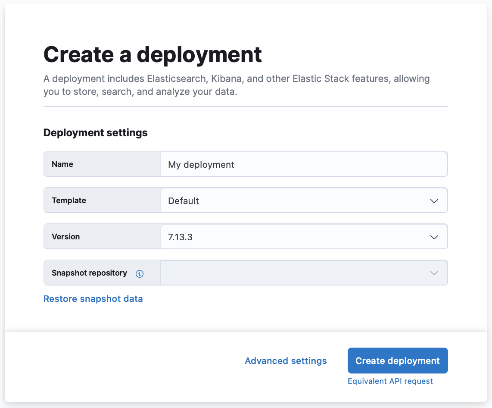
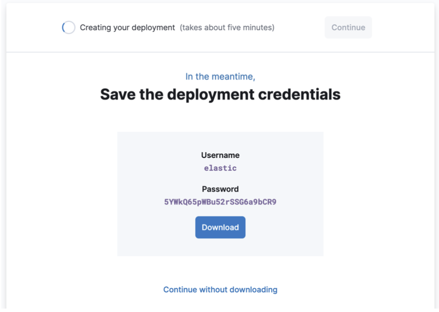

Create your deploymentedit
An Elastic Cloud deployment includes Elastic Stack components such as Elasticsearch, Kibana, and other features, allowing you to store, search, and analyze your data.
To get up and running with your deployment quickly:
-
From the Cloud UI, click Create deployment.
Once you are on the Create deployment page, you can edit the basic settings, or configure more advanced settings.
- Give your deployment a name.
-
Select a template to optimize your deployment for your use case.
- Default. A template to get you started and for backwards compatibility with existing deployments. The default template is suitable for search and general all-purpose workloads that don’t require more specialized resources. What’s included …
- Cross Cluster Search. A lightweight hub to manage remote connections for running Elasticsearch queries across multiple deployments and indices. What’s included …
- Elastic Security. Combines SIEM threat detection features with endpoint prevention and response capabilities. What’s included …
- App Search. Default deployment template for App Search.
- Elastic Enterprise Search. Default deployment template for Elastic Enterprise Search.
- Elastic Observability. Includes any combination of data ingestion for Application Performance Monitoring (APM), logs, or metrics. What’s included …
- Choose your Elastic Stack version.
-
Optionally, use snapshots to back up your data or restore data from another deployment.
Restoring a snapshot can help with major version upgrades by creating a separate, non-production deployment where you can test, for example. Or, make life easier for your developers by providing them with a development environment that is populated with real data.
- Click Advanced settings, to configure your deployment for autoscaling, storage, memory, and vCPU.
-
Click Create deployment. It takes a few minutes before your deployment gets created.
While waiting, you are prompted to save the admin credentials for your deployment which provides you with superuser access to Elasticsearch. Write down the password for the
elasticuser (or theadminuser for version 2.x) and keep it somewhere safe. These credentials also help you add data using Kibana. If you need to refresh these credentials, you can reset the password. - Once the deployment is ready, click Continue to open the deployment’s main page. From here, you can start ingesting data or simply try a sample data set to get started.
After a deployment is spun up, you can scale the size and add other features; however, the instance configuration and computing ratios cannot be changed. If you need to change an existing deployment to another template, we recommend migrating your data.
That’s it! Now that you are up and running, start exploring with Kibana, our open-source visualization tool. If you’re not familiar with adding data, yet, Kibana can show you how to index your data into Elasticsearch, or try our basic steps for working with Elasticsearch.